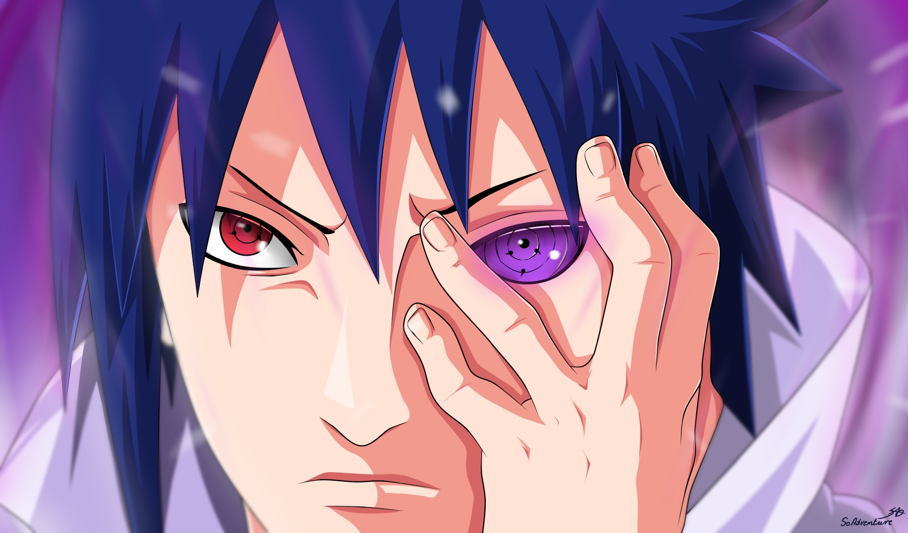

Аниме – это японские мультфильмы, или анимация. Аниме отличается от просто мультфильмов и поэтому выделяется своим собственным названием.Знакомые аниме которые вы возможно знаете:Наруто,Ван пис,Покемоны,Соник X, и т.д. Аниме является исключительно японским жанром мультипликационной анимации, которая рассчитывается в основном на взрослую аудиторию. Такой мультсериал, как «Пикачу» и пара других, являются исключением.
1958 год - год рождения аниме

3 октября 2002 года на телеканале TV Tokyo появился всем знакомое аниме Наруто.
Ну если вы не знаете что-то о аниме Наруто давайте я вам сейчас раскажу.Был пацан ктоторый стать Хокаге(глава деревни)и на протежении всего аниме он пытается стать Хокаге.Подробнее вы можете узнать на других сайтах потому что если я начну расказывать все подрять то будет много текста на сайте.
Как-то раз мы со Стрелкой разговорились о том, что нам нравится больше всего, и получился вот такой список (от большего к меньшему):
Спасибо за просмотр сайта ДОСВИДОС.